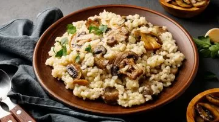
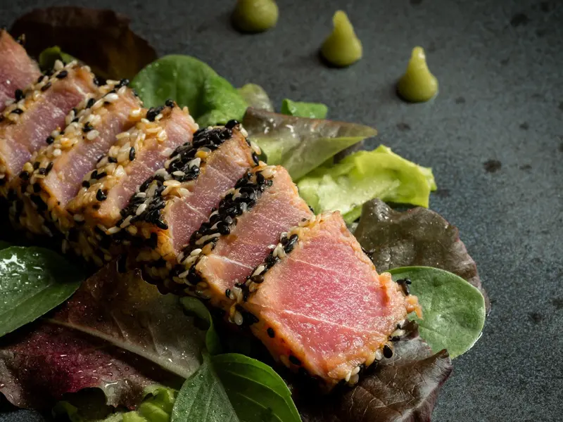
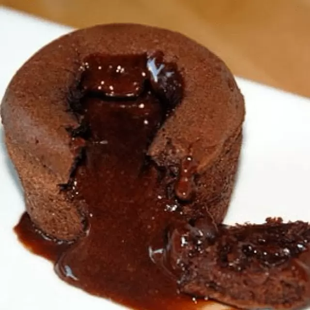

Sobre Gael Vigil
El Chef Gael Vigil es un maestro de la cocina moderna, reconocido por su capacidad para transformar ingredientes simples en obras maestras culinarias. Su experiencia abarca más de 15 años en los mejores restaurantes del mundo.
Especialidades

Risotto de Trufa
trufa exquisita con sabores paralizantes

Atún Sellado
atún traido desde italia con romero
